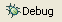

This page describes how to run the Aptana JavaScript debugger.
Introduction
Once you have the JavaScript debugger configured and installed for your browser (see Installing the JavaScript debugger), you can run the JavaScript debugger. Use the debugger to help you troubleshoot your JavaScript code.
Instructions
To run the debugger:
- In either your File View or Project View, right-click the file that you want to debug, and select Debug As... > JavaScript Web Application from the context menu.
A browser window containing your file opens.
- Return to Aptana.
- In the upper-right corner of the workbench, click the Debug perspective button .
Note: If this is your first time using the Debug perspective, click the Perspective button
 in the upper-right corner of the workbench, then select Other > Debug from the pop-up menu. Aptana will "remember" the Debug perspective and create a button for it after that.
in the upper-right corner of the workbench, then select Other > Debug from the pop-up menu. Aptana will "remember" the Debug perspective and create a button for it after that.
{kind=link}
You can now start using the Aptana Debug perspective to start debugging your JavaScript code. See About the Aptana Debug perspective for more information.
To stop debugging and close your browser window, click the Terminate button  .
.